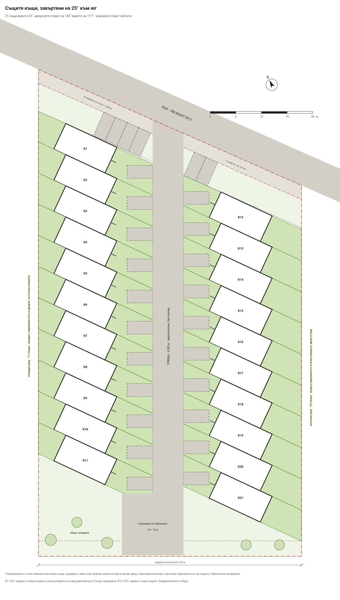

Улица по средата: 23 къщи, 4 174 м²
Улица от 6 м по средата на имота и два реда редови къщи на три етажа, без еркер. Всяка къща е на своя ивица от границата до улицата, оградена с жив плет, с вход и паркомясто откъм улицата и със свой двор. Никое жилище не дели двор с друго. В дъното има площадка за обръщане 12 × 12 м, каквато иска противопожарната наредба.
Ситуация

Западният ред е с гръб на 3 м от границата; входът, паркомястото и дворът му са откъм улицата. Източният ред е с вход и паркомясто откъм улицата и с двор отзад. Общи са улицата, площадката за обръщане, градината в дъното и малката детска площадка на входа (35 м²). По-голяма площадка на входа струва една къща.
Етажите на къщата

Партерът е в два вида. При източния ред входът е от улицата, а дневната излиза на двора отзад. При западния ред входът е откъм двора и улицата, през малко антре в дневната, а вратата към запад остава заден вход към ивицата от 3 м. Етаж 2 е с три спални и баня, етаж 3 е с родителска спалня, кабинет и втора баня. Стълбата, WC, пералното и кухнята са на едно и също място в двата реда.
Какво получава една къща
| Западен ред (К1–К12) | Източен ред (К13–К23) | |
|---|---|---|
| РЗП на къщата | 181,5 м²: три етажа по 60,5 м² | 181,5 м²: три етажа по 60,5 м² |
| Размери | 5,50 м широка, 11,00 м дълбока, височина 9,90 м | 5,50 м широка, 11,00 м дълбока, височина 9,90 м |
| Ивицата на къщата | 123 м²: 5,50 × 22,41 м | 126 м²: 5,50 × 22,89 м |
| Двор | 34 м² пред къщата, 8,41 м дълбок, откъм улицата и слънцето; плюс 16 м² ивица отзад | 38 м² зад къщата, 6,89 м дълбок, откъм слънцето; плюс 15 м² предна градинка |
| Помещения | 4 спални, кабинет, 2 бани и WC; дневна 19,7 м², кухня с трапезария 11,0 м² | 4 спални, кабинет, 2 бани и WC; дневна 23,3 м², кухня с трапезария 11,0 м² |
| Вход | откъм двора и улицата, плюс заден вход към ивицата | от улицата |
| Паркиране | 1 място в двора, пред входа | 1 място пред входа |
| Слънце в дневната, 21 декември | 3,4 ч | 6,1 ч |
РЗП е смятано по външните стени: 5,50 × 11,00 м на етаж. Чистата площ на помещенията е 127,6 м², без стълбата и коридорите.
Защо беше 2 708 м² и как се стига над 4 000
| Вариант | Жилища | Етажи | Едно жилище | РЗП общо | Кинт | Двор, запад / изток | Слънце 21 дек., запад / изток |
|---|---|---|---|---|---|---|---|
| Мезонети на юг, доизпипан | 18 | 3 | 171 и 109 м² | 2 708 м² | 0,69 | само апартаментите, 125–145 м² | 2,2 до 8,9 ч |
| Улица, 2 етажа с еркер (предишният чертеж) | 23 | 2 | 131 м² | 3 011 м² | 0,77 | 19 / 26 м² | 1,1 / 2,9 ч |
| Улица, 3 етажа с еркер | 23 | 3 | 205 м² | 4 718 м² | 1,20 | 19 / 26 м² | 0,2 / 2,9 ч |
| Улица, 3 етажа без еркер, дълбочина 10,30 м | 23 | 3 | 170 м² | 3 909 м² | 1,00 | 38 / 41 м² | 3,5 / 6,1 ч |
| Улица, 3 етажа без еркер, дълбочина 11,00 м | 23 | 3 | 182 м² | 4 174 м² | 1,06 | 34 / 38 м² | 3,4 / 6,1 ч |
| Улица, 3 етажа без еркер, дълбочина 12,40 м | 23 | 3 | 205 м² | 4 706 м² | 1,20 | 25 / 31 м² | 3,2 / 6,1 ч |
- 2 708 м² бяха мезонетите на юг. Те са на три етажа, но са само 12 оси: завъртането на 165° и дворовете от 12 м оставят много неизползвано място между групите.
- Таванът е 4 707 м² (Кинт 1,2 върху 3 923 м²). С улица по средата и три етажа се стига до него, ако къщата е дълбока 12,40 м.
- Избрах дълбочина 11,00 м: 4 174 м², къща от 182 м² и двор от около 35 м². Всеки метър дълбочина добавя около 380 м² РЗП и взима около 5 м² от всеки двор.
- Еркерът вреди на слънцето. Той виси 3,20 м над витрината на партера и я засенчва почти целия ден. Без него дневната има 2–3 пъти повече слънце, а площта се наваксва с третия етаж.
Какво става, ако къщите се завъртят към юг

| Завъртане | Дворовете гледат | Къщи | РЗП | Двор, запад / изток | Слънце 21 дек., запад / изток | Слънце 21 март, запад / изток |
|---|---|---|---|---|---|---|
| 0° (препоръчано) | 117° | 23 | 4 174 м² | 34 / 38 м² | 3,4 / 6,1 ч | 4,8 / 7,1 ч |
| 15° | 132° | 22 | 3 993 м² | 33 / 38 м² | 2,7 / 5,4 ч | 4,3 / 6,6 ч |
| 25° | 142° | 21 | 3 812 м² | 37 / 42 м² | 2,4 / 5,1 ч | 4,2 / 6,4 ч |
| 36° | 153° | 18 | 3 267 м² | 47 / 51 м² | 2,3 / 4,9 ч | 4,3 / 6,3 ч |
Завъртането не помага. Редът става зъбчат и всяка къща заема повече от дължината на улицата, затова се събират по-малко къщи. Съседната къща стърчи откъм югозапад и пази сянка от обяд нататък, затова слънцето намалява, вместо да расте. Дворът става малко по-голям, но е триъгълен. Затова препоръчвам правите редове.
Колко пряко слънце влиза
| Часове пряко слънце на ден | 21 декември | 21 март | 21 юни |
|---|---|---|---|
| Западен ред, партер | 3,4 ч | 4,8 ч | 7,6 ч |
| Западен ред, етаж 2 | 4,2 ч | 5,6 ч | 7,6 ч |
| Източен ред, партер | 6,1 ч | 7,1 ч | 7,6 ч |
| Източен ред, етаж 2 | 6,1 ч | 7,1 ч | 7,6 ч |
Смятано е на витрината откъм двора, при ясно небе: на партера на 0,80 м над пода, на втория етаж на 3,90 м над терена. Засенчват всички къщи в имота, като кутии с височина 9,90 м. Съседните имоти не са включени. Дневните гледат на изток-югоизток (117°), затова слънцето влиза сутрин и до ранния следобед. Западният ред има по-малко, защото сутрин източният ред му пази сянка от 19,4 м разстояние.
Проверка по Наредба № Iз-1971
| Изискване | Какво казва наредбата | Тук |
|---|---|---|
| Път за противопожарни цели | Чл. 27, ал. 1, 2 и 8: за всяка сграда над 35 м²; улиците и алеите се зачитат; широчина поне 3,5 м. | Изпълнено. Улицата е 6 м и минава пред всяка къща. |
| Улица без изход | Чл. 27, ал. 7: задънен път над 45 м завършва с площадка поне 12 × 12 м за обръщане на пожарните автомобили. | Изпълнено. Улицата е 69 м до площадката, която е 12 × 12 м. В предишния чертеж обръщалото беше 18 × 5 м и не отговаряше. Това струва една къща. |
| Достъп до стените | Чл. 27, ал. 4: всяка външна стена на партера е на не повече от 90 м от пътя, по маршрута на шланга. | Изпълнено. Най-далеч е средата на гърба на западния ред: около 50 м. |
| Завой | Чл. 27, ал. 9: външен радиус на завоя поне 10,5 м. | Да се провери. Влизането от пътя е под ъгъл и трябва да се оразмери. |
| Площ на сградата | Чл. 13, табл. 4: за Ф1.4 на три етажа до 2 000 м² при II степен на огнеустойчивост. | Изпълнено. Западният ред е 726 м² застроена площ, източният 666 м². Ред от 12 къщи (66,0 м) е допустим. |
| Стени между къщите | Чл. 19 и 20: брандмауерът е REI 120, от негорими продукти (А2), без отваряеми прозорци; при горимо покривно покритие излиза 0,30 м над него. | Изпълнено. Калканите са плътни стени без отвори. При завъртяните къщи откритата част на калкана също остава без отваряеми прозорци. |
| Разстояния между сградите | Чл. 405 и 406, табл. 39: 4 м между сгради от I и II степен; не се нормират, ако сградите са разделени с брандмауер. | Изпълнено. Между двата реда има 19,4 м. Изискване за разстояние до границата в наредбата няма; по ЗУТ са спазени 3 м. |
| Вода за гасене | Чл. 170: хидранти до 15 м от пътя, през не повече от 150 м, и до 200–300 м от жилищните сгради. | Да се провери. Не знам къде е най-близкият хидрант. Вероятно трябва един на входа на улицата. |
Четено е в редакцията в сила от 31.12.2024 г., от текста на сайта на МВР. Проверката е по текста на наредбата, не е становище на пожарната. Приел съм II степен на огнеустойчивост (стоманобетон и тухла) и че всяка къща е еднофамилна сграда (подклас Ф1.4).
Какво не е проверено
- Дали улицата може да е задънена улица по чл. 81 от ЗУТ. Тогава площадката за обръщане не е задължителна до 100 м и се връща една къща.
- Къде е най-близкият пожарен хидрант и дали водопроводът по пътя дава нужното количество.
- Радиусът на завоя при влизане от пътя: външният трябва да е поне 10,5 м.
- Конструкцията и инсталациите на къщата. Плановете на етажите са схема за обсъждане.
- Засенчването от съседните имоти, водопровод, канал и ток.